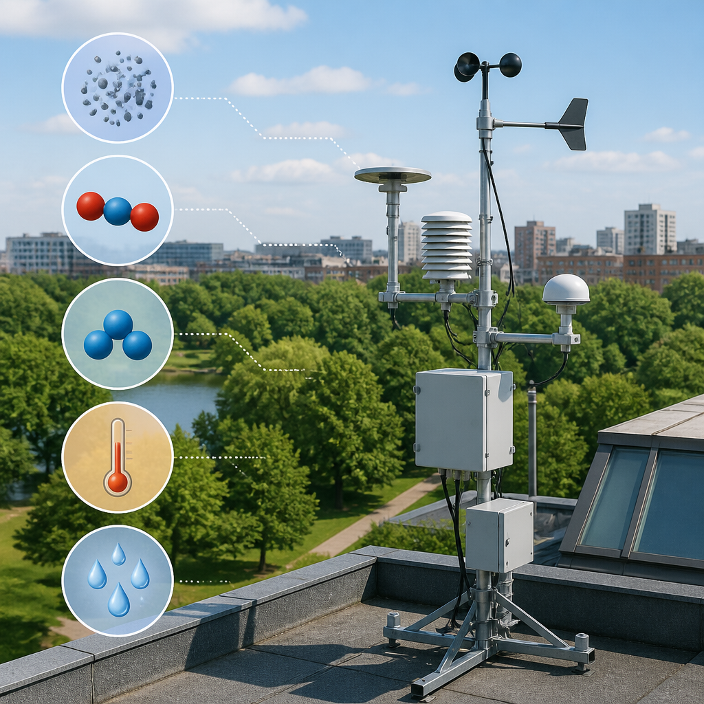
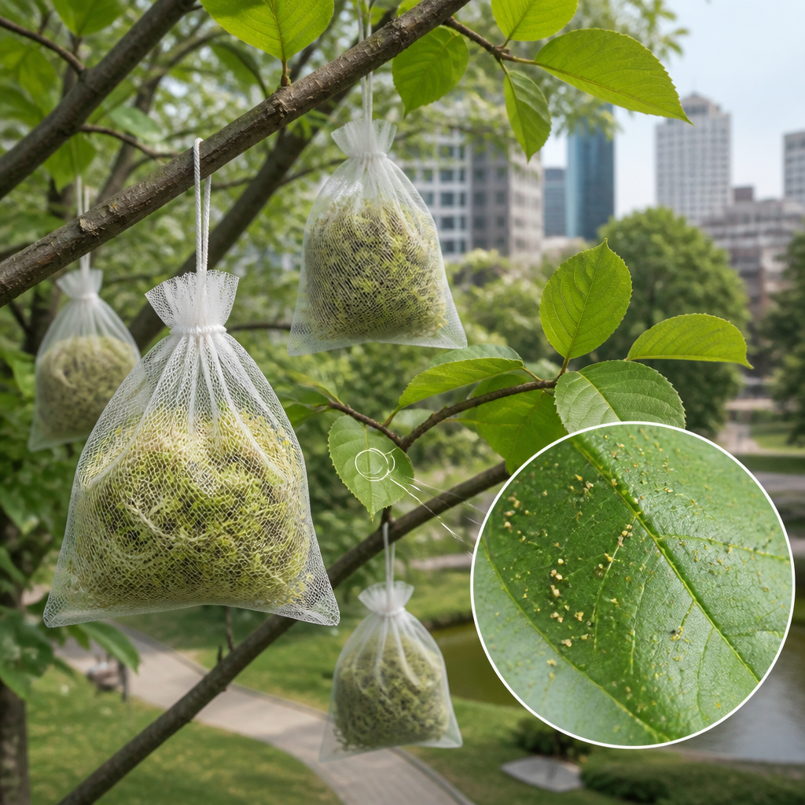

Nel parco romano un progetto unisce sensori, muschi e osservazioni sulle foglie per studiare inquinanti, caldo e ruolo della vegetazione.
Villa Paganini è al centro di un progetto che guarda all’area verde come a un luogo di osservazione dell’ambiente urbano. I primi risultati dell’iniziativa “Villa Paganini, un parco urbano nell’Antropocene” sono stati presentati il 16 settembre. Al progetto partecipano ARPA Lazio, l’Istituto di ricerca sugli ecosistemi terrestri del CNR e il Dipartimento di tutela ambientale di Roma Capitale, Direzione gestione territoriale ambientale e del verde. L’iniziativa è nata su proposta dello studio di architettura Schiattarella Associati.
Lo scopo è realizzare un biomonitoraggio attivo e passivo, cioè un controllo dell’ambiente che utilizza specie vegetali, per valutare sia la presenza di inquinanti atmosferici sia l’effetto delle barriere vegetali nel mitigare il caldo e l’inquinamento dell’aria. L’idea è trasformare il parco in un “parco sentinella”: un prototipo di area verde urbana capace di indicare e misurare i rischi collegati alla pressione antropica e ai cambiamenti climatici.
Villa Paganini si estende per circa 25.000 metri quadrati ed è legata alla vita quotidiana del quartiere. Aperta al pubblico dal 1934, ospita oggi una scuola ed è frequentata ogni giorno da diverse categorie di residenti. Proprio questa relazione con il contesto circostante rende l’area un caso di studio per comprendere le dinamiche dell’ambiente urbano e per sperimentare soluzioni rivolte al futuro.
Per seguire le condizioni dell’aria, ARPA Lazio ha installato sul tetto dello studio di architettura la strumentazione necessaria a monitorare il particolato, ovvero minuscole particelle sospese nell’aria, nelle classi PM1, PM2.5 e PM10. La rete di strumenti rileva inoltre biossido di azoto, ozono e alcuni parametri meteorologici: temperatura, umidità relativa e pressione atmosferica.

Per valutare l’effetto dell’area verde sull’isola di calore urbano e sulla qualità dell’aria, i dati chimici e meteorologici raccolti nel parco vengono confrontati con quelli della stazione Boncompagni di ARPA, a circa un chilometro di distanza. L’isola di calore urbano è il fenomeno per cui le aree cittadine possono risultare più calde rispetto alle zone circostanti. Il confronto permette quindi di mettere in relazione le misure effettuate a Villa Paganini con quelle rilevate in un altro punto.
Il progetto non si basa soltanto sui sensori. Tra le azioni previste c’è infatti l’impiego dei muschi come bioaccumulatori, organismi capaci di accumulare sostanze presenti nell’ambiente. Il metodo utilizzato è quello delle “moss bags”: piccoli sacchetti di nylon contenenti muschio devitalizzato, indicato come particolarmente efficace nell’accumulare gli inquinanti presenti nell’aria.

I risultati del biomonitoraggio vengono messi in relazione con i dati sulla qualità dell’aria raccolti dai sensori ARPA Lazio in prossimità della Villa e con le condizioni microclimatiche. Il microclima è l’insieme delle condizioni atmosferiche di una zona limitata. Nell’analisi rientrano velocità e direzione dei venti, precipitazioni, temperatura, umidità e radiazione.
Un’altra parte della sperimentazione riguarda le deposizioni di particolato sulle superfici fogliari di alcune specie arboree. L’obiettivo è approfondire il contributo della vegetazione nell’assorbimento degli inquinanti atmosferici. In questo modo, le piante sono considerate sia come elementi del paesaggio del parco sia come strumenti utili a osservare ciò che avviene nell’ambiente circostante.
Villa Paganini viene studiata come possibile parco sentinella. Il progetto confronta dati su particolato, biossido di azoto, ozono e condizioni meteorologiche con quelli della stazione Boncompagni di ARPA. Muschi e foglie aiutano a valutare la presenza e le deposizioni di inquinanti.
La sperimentazione è su piccola scala, ma il progetto ambisce a produrre dati utili per l’intera città di Roma. L’obiettivo dichiarato è fornire informazioni sulla funzionalità delle piante nella mitigazione della contaminazione atmosferica e sugli effetti delle aree verdi nel microclima urbano. I risultati potranno contribuire alla definizione di soluzioni basate sulla natura, per limitare la vulnerabilità, favorire l’adattamento alle nuove condizioni ambientali e mitigare la pressione della comunità urbana sull’ecosistema.
Questo articolo l'hai letto sul blog di Meteo News Radar: un'app che ti mostra da dove vengono i numeri, invece di limitarsi a dartelo. E ogni mattina ne trovi uno nuovo come questo.